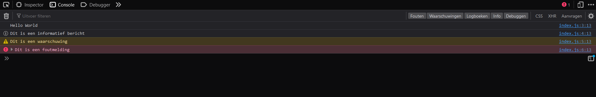

Console en commentaar
Welkom bij de eerste les van de cursus JavaScript basis. In deze eerste les ga ik het hebben over het gebruiken van de console, het maken van commentaar in je code en de verschillende data types die je kan gebruiken in JavaScript.
De console in JavaScript kan je gebruiken om berichten te tonen die alleen voor jou als programmeur bedoeld zijn. Om deze berichten te kunnen zien moet je de console openen in je browser.
Voordat we dat doen gaan we eerst een bericht in de console zetten.
Open het bestand index.js in de map js. Hier gaan we de hele cursus in werken.
In dit bestand staan al een paar regels code die we later gaan gebruiken.
Voor nu kan je alles plaatsen onder de regel // Start coding here.
Om een bericht in de console te zetten gebruiken we de functie console.log().
Deze functie kan je gebruiken om een bericht te tonen in de console.
Zet de volgende regel code onder de regel // Start coding here:
console.log("Hello World");
Om dit bericht te bekijken gaan we de console openen in de browser.
Dit kan je doen door op de toetsen Ctrl + Shift + I te drukken.
Daarna klik je op het tabblad Console.
Als je de console hebt geopend zie je het bericht Hello World staan.

Ik gebruik firefox als browser, maar als je een andere browser gebruikt ziet het er ongeveer hetzelfde uit.
Als volgende gaan we andere soorten berichten in de console zetten, zoals waarschuwingen en foutmeldingen.
Zet de volgende regels code onder de regel console.log("Hello World");:
console.info("Dit is een informatief bericht");
console.warn("Dit is een waarschuwing");
console.error("Dit is een foutmelding");
Als je nu de console opent in de browser zie je de verschillende berichten staan.

Deze berichten kan je gebruiken om jezelf te helpen bij het programmeren. Als je bijvoorbeeld een foutmelding krijgt in de console weet je dat er iets mis is gegaan in je code.
De berichten kunnen nu verwijderd worden, want we gaan deze niet gebruiken voor onze rekenmachine.